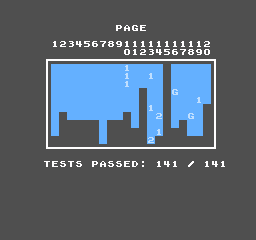

AccuracyCoin — 141 tests, unattendedAccuracyCoin —— 141 個測試,無人值守
AccuracyCoin is a single NROM cartridge holding 141 accuracy tests, written for an NTSC console with an RP2A03G CPU and RP2C02G PPU — exactly the die pair AprVisual.S1 simulates transistor by transistor. It ships as an interactive menu, so we forked it into an unattended build: the test loop itself is untouched, and the only addition is a hook that runs the whole suite with no controller and leaves a completion block in CPU RAM ($07F0 = DE B0 61, then passed / total / skipped). The verdict is read from that block, never from the picture.
AccuracyCoin 是一張 NROM 卡帶,裡面裝了 141 個精確度測試,專為搭載 RP2A03G CPU 與 RP2C02G PPU 的 NTSC 主機而寫 —— 正好就是 AprVisual.S1 逐電晶體模擬的那兩顆晶粒。它原本是互動選單,必須有人拿手把操作,所以我們把它 fork 成無人值守版:測試迴圈一行沒動,只加了一個掛勾,讓整套測試自己跑完,並在 CPU RAM 留下完成區塊($07F0 = DE B0 61,接著是通過數 / 總數 / 略過數)。判定值一律讀那個區塊,不是看畫面。

Run configuration, because it changes what the number means: cart-extraram is not mounted — several AccuracyCoin tests measure the open bus at $6000-$7FFF, and mapping RAM there would answer those reads with RAM and corrupt them silently; the same global test-mode shims as the 147-ROM sweep are enabled; power-on CPU/PPU alignment is pinned (K=1); one pinned core, no clock lock.
執行配置,因為它決定了這個數字的意義:沒有掛載 cart-extraram —— AccuracyCoin 有數個測試在量 $6000-$7FFF 的 open bus,把 RAM 映射上去會讓那些讀取讀到 RAM,測試照跑照給結果,但結果是錯的;其餘沿用與 147 顆回歸相同的全域測試模式 shim;開機時 CPU/PPU 相位對齊固定(K=1);單一綁定核心,不鎖頻。
0 · Glossary — the words this page keeps using0 · 術語速查 —— 本頁反覆出現的行話
This project grew its own vocabulary for how a fix travels from "found it" to "it's on the scoreboard". Five terms cover most of it:
這個專案為「一個修正從『找到了』走到『上計分板』」的流程長出了一套自己的詞彙。看懂這五個,整頁就通了:
| Term術語 | What it means意思 |
|---|---|
| Banked sweep (flagship run)掛牌跑 (正式完整跑) |
One uninterrupted run of all 141 tests from frame zero (~7.5 hours). Only this produces the scoreboard number — like a listed price, it's the official figure. Fixes verified in between do not move the number until the next banked sweep, because every fix changes the downstream trajectory: stitching old partial runs together would not be an honest total.從第 0 幀不間斷跑完整套 141 顆測試(約 7.5 小時)。只有它產生計分板數字 —— 像掛牌價一樣,是對外的官方數字。期間驗證完成的修正不會先動數字,要等下次掛牌跑「入帳」:因為每個修正都會改變後續的執行軌跡,拿舊的片段跑拼裝總分並不誠實。 |
| Isolated ROM孤立 ROM | The same cartridge, rebuilt with a compile-time switch so it boots straight into one test — the test code itself is untouched (with every switch off, the ROM is byte-identical to production, SHA-verified). Turns the debug loop from hours per experiment into 2-3 minutes.同一張卡帶,用組譯期開關改建成「開機直奔某一顆測試」的特製版 —— 測試程式碼本身一行不動(開關全關時,組出來的 ROM 與正式版逐位元組一致,SHA 驗證)。把除錯迴圈從「一次實驗幾小時」壓到 2-3 分鐘。 |
| Snapshot window快照窗 | Every run saves a full engine snapshot every 10 frames. A window resumes from a snapshot just before the region of interest, runs a bounded span, and diffs the entire result table against the baseline. It answers two questions at once: did the fix work in the real suite, and did it break any neighbour? Minutes instead of a 7-hour rerun.每趟跑每 10 幀存一份完整引擎快照。「窗」= 從目標區域前的快照 resume、跑一小段、再把整張結果表跟基準逐位元組比對 —— 一次回答兩件事:修正在真實套內有沒有效?有沒有打壞鄰居?幾分鐘,不用重跑七小時。 |
| ShimShim(墊片) | A small, test-mode-only behavioural patch layered on top of the transistor netlist, used where the engine's digital settling provably cannot express an analog race the real chip resolves by physics (timing-window overlaps, charge decay). Each shim is documented with the measurement that forced it, and the benchmark path never loads any of them.疊在電晶體 netlist 之上、僅測試模式載入的小型行為層補丁 —— 用在「引擎的數位收斂可證無法表達、真晶片靠物理解決」的類比競速上(時窗重疊、電荷衰減)。每個 shim 都附有逼出它的量測記錄;效能基準路徑一律不載入。 |
| Oracle / golden checksumOracle / 黃金 checksum | The oracle is AprNes, a behavioural emulator that scores 141/141 — it supplies the expected result byte for every test, and can be instrumented for event-by-event comparison. The golden checksum is a hash of the engine's complete node state after a fixed benchmark run: if it changes, a "test-only" change leaked into the core engine. It is re-verified after every fix.Oracle 指 AprNes —— 拿到 141/141 的行為層模擬器,提供每顆測試的期望結果,也能掛儀器做逐事件比對。黃金 checksum 是引擎在固定基準跑之後全部節點狀態的雜湊:它一變,代表「只影響測試」的修改其實漏進了核心引擎。每個修正之後都會重驗。 |
1 · What AccuracyCoin is, and why a fork1 · AccuracyCoin 是什麼,為什麼要 fork
AccuracyCoin (by Chris Siebert, MIT) packs 141 accuracy tests into a single NROM ROM: CPU dummy cycles, unofficial opcodes, DMA bus conflicts, APU frame-counter timing, PPU open bus, mid-scanline stress tests. Unlike most suites it targets one specific console revision — an NTSC front-loader with the RP2A03G CPU and RP2C02G PPU. That is, coincidentally, exactly the netlist pair our simulator runs.
AccuracyCoin(Chris Siebert 作,MIT 授權)把 141 個精確度測試塞進一張 NROM 卡帶:CPU 假週期、非官方指令、DMA 匯流排衝突、APU frame counter 時序、PPU open bus、掃描線中段的壓力測試。和多數測試集不同,它鎖定單一機種版本 —— 搭載 RP2A03G CPU 與 RP2C02G PPU 的 NTSC 前置式主機。巧的是,那正是我們模擬器跑的那兩顆 netlist。
Two things stop it from running headless: it boots into a menu that needs a controller, and results only exist on screen. Our fork — AprAccuracyCoinUnattended — adds a hook that auto-runs the whole suite and leaves a completion block in CPU RAM ($07F0 = DE B0 61, then passed / total / skipped). The test loop itself is untouched; the rebuilt ROM is byte-for-byte reproducible from source.
有兩件事讓它無法無人值守:開機進選單要手把操作,而且結果只存在於畫面上。我們的 fork —— AprAccuracyCoinUnattended —— 加了一個掛勾自動跑完整套,並在 CPU RAM 留下完成區塊($07F0 = DE B0 61,接著通過數 / 總數 / 略過數)。測試迴圈本身一行沒動;重組譯出的 ROM 可從原始碼逐位元重現。
Judgment is read from that RAM block, never from the picture. And one configuration detail changes what the numbers mean: we do not mount cartridge work RAM at $6000-$7FFF — several AccuracyCoin tests measure the open bus there, and mapping RAM would answer those reads with RAM, silently corrupting them.
判定值一律讀 RAM 區塊,不看畫面。還有一個會改變數字意義的配置細節:我們不在 $6000-$7FFF 掛卡帶工作 RAM —— AccuracyCoin 有數個測試就是在量那裡的 open bus,掛上 RAM 會讓那些讀取讀到 RAM,測試照跑照給結果,但結果是錯的。
2 · What it broke — thirteen chapters2 · 它打壞了什麼 —— 十三章戰記
A suite this aggressive is a stress test for the simulator, not just the game console. Running it exposed real engine defects that 147 other test ROMs never touched. Each chapter below is a bug story with a lesson.
這麼兇的測試集,壓的其實是模擬器本身。跑它暴露出的引擎缺陷,是先前 147 顆測試 ROM 從沒踩到的。以下每一章都是一個 bug 故事,各有一課。
Ch. 1 — A stack overflow at frame 4480第一章 —— frame 4480 的 Stack Overflow
The first full run died 92% in, with InvokeCallbacks repeated 24,021 times on the stack. The settle loop and the behavioural memory callbacks called each other recursively — and the callback dispatcher's claimed re-entrancy safety turned out to be false: a nested call swapped the shared pending/processing lists while the outer loop was iterating them, re-running callbacks and tearing the iteration. The fix is a one-bool re-entrancy guard: only the outermost dispatcher drains; nested entries return immediately. Verified bit-exact against the golden checksum at 2M and 20M half-cycles before merging.
第一次完整跑在 92% 處死掉,堆疊裡 InvokeCallbacks 重複了 24,021 層。settle 迴圈和行為層記憶體 callback 互相遞迴 —— 而 callback 派發器自稱的「可重入安全」其實是假的:巢狀呼叫會在外層迴圈迭代到一半時,把共用的 pending/processing 清單整個換掉,導致 callback 被重複執行、迭代被撕裂。修法是一個布林值的重入護欄:只有最外層派發器 drain,巢狀進入立即返回。併入前用黃金 checksum 在 2M 和 20M half-cycle 驗證逐位元不變。
Lesson: "bounded stack depth" and "terminating loop" are different guarantees. The guard delivered the first — and turned the crash into an infinite spin, which led to…
一課:「堆疊深度有上限」和「迴圈會終止」是兩回事。護欄只保證了前者 —— 把崩潰變成無限空轉,於是有了……
Ch. 2 — The $2007 Stress oscillation: a loop with no fixed point第二章 —— $2007 Stress 震盪:一條沒有固定點的迴路
Same frame, new symptom: 100% CPU, zero progress, no error. The test deliberately makes the PPU's ALE and external /RD active together, closing a hardware loop: CHR ROM data out → PPU's multiplexed AD bus → the board's transparent latch → back into CHR ROM's low address. Real silicon settles this through propagation delay and drive strength. Our ROM's content happened to contain ROM[$3C]=$06 and ROM[$06]=$3C — for a two-state simulator that mapping has no fixed point. It cannot settle, mathematically.
同一個 frame,新症狀:CPU 100%、零前進、零錯誤訊息。這顆測試刻意讓 PPU 的 ALE 和外部 /RD 同時有效,閉合出一條硬體迴路:CHR ROM 資料輸出 → PPU 多工 AD 匯流排 → 板上透明鎖存器 → 繞回 CHR ROM 低位址。真實矽晶靠傳播延遲和驅動強度讓它定下來。而我們這顆 ROM 的內容正好是 ROM[$3C]=$06、ROM[$06]=$3C —— 對二值模擬器來說,這個映射沒有固定點,數學上就是解不出來。
The fix family, in order of generality: a non-convergence detector (--callback-drain-limit) that turns a silent spin into an exception carrying the oscillating callbacks and node states; a genuine porting bug fixed (read-only ROM callbacks were watching the very data lines they drive — self-triggering); a genuine board-model bug fixed (CIRAM A10 was hard-wired for vertical mirroring; NROM wires it per the iNES header, and AccuracyCoin is horizontal); and finally a documented shim: when ALE+/RD overlap and Floyd's cycle-detection proves the ROM's low-byte mapping enters a real cycle, hold the previous output — emulating what the analog loop settles to. Most overlaps still converge digitally and are left alone.
修復家族,按一般性排序:一個不收斂偵測器(--callback-drain-limit),把無聲空轉變成帶著「哪些 callback 在震盪、節點狀態如何」的 exception;修掉一個真實的移植 bug(唯讀 ROM callback 監看了自己驅動的資料線 —— 自我觸發);修掉一個真實的板級模型 bug(CIRAM A10 被寫死成垂直鏡像;NROM 實際依 iNES header 接線,而 AccuracyCoin 是水平鏡像);最後是一個文件化的 shim:當 ALE+/RD 重疊且 Floyd 判圈演算法證明 ROM 低位元組映射真的成環時,保持前一次輸出 —— 模擬類比迴路實際定下來的值。多數重疊仍可數位收斂,一律不介入。
Verified: the isolated 341-sample answer key passes 1/1; golden checksum untouched; the production ROM rebuilds byte-identical.
驗證:isolated 341-sample 完整答案鍵 1/1 通過;黃金 checksum 不動;production ROM 重組譯逐位元相同。
Ch. 3 — Test 141, "Internal Data Bus": the open hunt第三章 —— 第 141 顆「Internal Data Bus」:進行中的追捕
With the oscillation fixed, the formal run sailed past the old death point — through all 341 stress samples — and stalled on the very last test of the suite. The screen says RUNNING TEST 141 / INTERNAL DATA BUS; the engine is perfectly healthy (a live CPU trace shows the simulation churning normally); the emulated 6502 itself is waiting for something. Prime suspect: the test's DMA-sync helper polls open bus at $4000 waiting for a DMC DMA fetch to drop $00 onto the external data bus — a wait with no timeout.
震盪修好後,正式跑一路衝過舊死點 —— 341 個壓力取樣全數通過 —— 然後停在整套的最後一顆測試。畫面寫著 RUNNING TEST 141 / INTERNAL DATA BUS;引擎完全健康(活體 CPU trace 顯示模擬正常輪轉);是模擬中的 6502 程式自己在等某個條件。頭號嫌犯:這顆測試的 DMA 同步 helper 會輪詢 $4000 的 open bus,等一個 DMC DMA fetch 把 $00 放上外部資料匯流排 —— 而且這個等待沒有 timeout。
Thirteen focused diagnostic ROMs — each chaining a different slice of the real suite in front of test 141 — all pass on S1: isolated, repeated ×16, the full DMC/APU pages, the complete $2007 Stress, the PPU tail, a condensed formal tail. The next formal run carried new telemetry (the emulated PC, address and data bus in every checkpoint) — and it ended the hunt with a twist: test 141 passed. The suite ran all 141 tests to completion for the first time. What broke was the epilogue — see chapter 4.
十三顆聚焦診斷 ROM —— 每顆在第 141 顆前面串上真實測試集的不同切片 —— 在 S1 上全數通過:isolated、連跑 16 次、完整 DMC/APU 兩頁、完整 $2007 Stress、PPU 尾段、濃縮正式尾段。下一趟正式跑帶上了新 telemetry(每個 checkpoint 記錄模擬中的 PC、位址與資料匯流排)—— 結局帶著反轉:test 141 通過了。整套 141 顆測試史上第一次全部跑完。壞掉的是收尾階段 —— 見第四章。
Ch. 4 — The scoreboard heist, and the interrupt with nowhere to go第四章 —— 偷看計分板,以及一個無處可去的中斷
By now every run records two things per 10 frames: a full engine-state snapshot and a telemetry line with the emulated CPU's PC. The snapshots had an unplanned payoff: AccuracyCoin keeps one result byte per test in CPU RAM, so a Python script can read the whole scoreboard mid-flight from a file, engine untouched, and diff it against the oracle. One look at the ROM source decoded the bytes — a fail is (error code << 2) | 2, a pass is odd — which instantly acquitted three suspects (SHA/SHS score different but accepted behaviour variants) and exposed the real pattern: six tests all failing with their own error #2, every one of them in the DMC-DMA/controller family. Three read the controller port outright; the other three use the controller's shift register as their cycle-counting instrument. Our test rig never attaches the behavioural controller — the gate-level pad can't survive this engine's GND-wins group resolution, and the swap is opt-in by probe-effect discipline. Six verdicts, one missing plug.
到這時,每趟跑每 10 幀都記錄兩樣東西:完整引擎狀態快照和帶模擬 CPU PC 的 telemetry。快照帶來計畫外的紅利:AccuracyCoin 在 CPU RAM 裡給每顆測試留一個結果 byte,所以一支 Python 腳本能飛行中從檔案讀出整張計分板 —— 引擎毫無感覺 —— 再對 oracle 做差異。看一眼 ROM 原始碼就解開了編碼 —— 失敗是 (錯誤碼 << 2) | 2,通過是奇數 —— 當場替三顆嫌犯脫罪(SHA/SHS 拿的是不同但可接受的行為變體),並暴露出真正的規律:六顆測試全部倒在各自的錯誤 2,清一色 DMC-DMA/手把家族。三顆直接讀手把埠;另外三顆拿手把的 shift register 當週期計數儀器。我們的測試台從未掛上行為層手把 —— 閘級手把活不過這個引擎「GND 全勝」的群組解析,而模組替換依探針效應紀律做成 opt-in。六個判決,一個沒插的插頭。
Then the finale. The formal run sailed through both historical blockers — all 341 stress samples, then test 141 itself — filled all 141 result bytes… and never wrote its completion block. Telemetry showed the CPU executing at $0600, address bus striking $FFFE, the stack cycling 02 06 35: a BRK storm. The ROM source names $0600 as its RAM-resident IRQ routine — and the $2007 Stress test deliberately overwrites that page with sample data, because after it no interrupt is supposed to fire. Resuming a snapshot from ten frames earlier with a node watch caught the gun going off: the ROM's own DMA-sync writes $4017 (frame 4786, re-enabling frame IRQs to reset the sequencer), test 141 finishes and PASSES, and one frame later the APU frame counter's IRQ rises — legitimately — into a vector pointing at dead RAM. Real hardware wins that race by a margin of cycles; our DMC timing — the same family as the six failures above — loses it. Every probe in this chapter cost minutes, because any 10-frame point of a seven-hour run is now two seconds away.
然後是終局。正式跑一路衝過兩個歷史障礙 —— 341 個 stress 取樣、然後是 test 141 本身 —— 填滿全部 141 個結果 byte……卻始終沒寫完成區塊。telemetry 顯示 CPU 在 $0600 執行、位址匯流排敲著 $FFFE、堆疊循環著 02 06 35:BRK 風暴。ROM 原始碼寫明 $0600 是它駐 RAM 的 IRQ 常式 —— 而 $2007 Stress 刻意用取樣資料覆蓋那一頁,因為在它之後理應不會再有中斷。從十幀前的快照 resume、掛上節點監看,當場拍到開槍瞬間:ROM 自己的 DMA 同步寫了 $4017(frame 4786,為重置序列器而重新啟用 frame IRQ),test 141 跑完並通過,一幀後 APU frame counter 的 IRQ —— 完全合法地 —— 升起,射向一個指著死 RAM 的向量。真機以數百週期之差贏得這場競速;我們的 DMC 時序 —— 與上面六顆失敗同一家族 —— 輸掉了。本章每個探測都只花幾分鐘,因為七小時跑的任何一個 10 幀點,現在都只有兩秒遠。
Ch. 5 — LAE: twenty-two rounds against one instruction第五章 —— LAE:對一條指令的二十二回合
LAE ($BB) loads A = X = SP = (memory & SP) off one bus in one cycle — an analog three-way broadside. The suite scored it error 3: X wrong. The isolated reproduction (two minutes per experiment, built from the same compile-time gate family as the other focused ROMs) showed the shape of the problem immediately: A captured the correct merge ($4A), X and S latched the pre-merge bus ($CA — the raw SP). The merge value exists only mid-settle; at no quiescent boundary does the bus still carry it.
LAE($BB)在一個週期內把 A = X = SP =(記憶體 & SP) 從同一條匯流排載入 —— 三路齊發的類比合併。套件給它錯誤 3:X 錯。isolated 重現(每次實驗兩分鐘,與其他聚焦 ROM 同一套組譯期閘家族)立刻照出問題的形狀:A 抓到正確合併($4A),X 和 S 閂到合併前的匯流排($CA —— 原始 SP)。合併值只存在於 settle 中途;任何靜止邊界上,匯流排都不再攜帶它。
Twenty-two measured rounds later, the working fix has three parts, each forced by an autopsy: (1) compute the merge — the shim logs the op's memory reads at the behavioural layer (CPU bus only; with rendering on, CHR fetches would flood the log), recovers the operand pair, derives the target, and computes mem & SP from ground truth; (2) fix A, X and the flags in the load window — where register autopsies taught us that A and S are cross-coupled dynamic pairs whose un-forced half wins the next clocked refresh, and that S's write-back arrives ~49 half-cycles after IR has already moved on (the 6502's T0/T1 overlap); (3) defer S, rewrite the push — the read log proved the following PHA had already pushed the smeared value before the shim's window even opens, so the stack byte is corrected retroactively in behavioural RAM and S itself is fixed at the first TSX that reads it, letting the intervening stack quartet run self-consistently exactly as hardware would.
二十二個有量測的回合之後,可用的修正分三部分,每一部分都由一次屍檢逼出來:(1)算出合併值 —— shim 在行為層記錄這條指令的記憶體讀取(只收 CPU 匯流排;渲染開著時 CHR 取指會灌爆記錄),還原 operand 對、推出目標位址,從真值算 mem & SP;(2)在載入窗口修 A、X 與旗標 —— 暫存器屍檢教會我們:A 和 S 是交叉耦合動態對,沒被 force 的那半邊會在下個時脈刷新贏回去;而 S 的回寫比 IR 換人晚 ~49 個半週期(6502 的 T0/T1 重疊);(3)S 延遲、堆疊回寫 —— 讀取記錄證明後面的 PHA 早在 shim 窗口打開之前就把污染值推上堆疊,所以堆疊位元組在行為層 RAM 直接回寫更正,S 本體則等到第一個真正讀它的 TSX 才修 —— 中間的堆疊四重奏用舊基底自洽地跑完,和真機一模一樣。
Verified: the isolated ROM passes 1/1 (all three sub-tests, including the page-crossing zero-result case); a snapshot-resume regression window across the whole unofficial-opcode block shows exactly one changed byte in the result table — LAE's, now green; LXA, its shim sibling, untouched; golden checksum unchanged through all twenty-two rounds. The scoreboard on this page stays at the last full run's number until the next full sweep banks the fix.
驗證:isolated ROM 1/1 通過(三組子測試,含頁跨越的零結果情境);快照 resume 的回歸窗口掃過整個非官方指令區,結果表恰好只有一個 byte 改變 —— LAE 的,翻綠;它的 shim 手足 LXA 毫髮無傷;二十二回合黃金 checksum 全程不變。本頁計分板維持上次完整跑的數字,待下次全套掃描把修正入帳。
Ch. 6 — Open bus: the byte the wires remember第六章 —— Open bus:電線記得的那個位元組
AccuracyCoin's OpenBus test ends with the suite's most audacious choreography: it jumps the program counter into unmapped address space and expects the CPU to execute what the floating bus remembers — an LSR left over from a JSR operand, then an RTS left by the LSR's own write-back. On S1 the RTS fetch read $70 instead of $60: one bit adrift, and the PC marched off into an IRQ trap. Six probes deep — an instruction-stream tracer, a driver roll-call (every external gate provably OFF), a walk of the unmanaged transistor tables, a per-bit drive census, and finally a settle-level microscope on one register bit — the culprit confessed: a precharge glitch on DOR bit 4 flickered inside a single settle, exactly while the CPU's φ1 pad-drive window stood open, and escaped onto the bus. On silicon that drive window outlives the glitch a hundredfold; a quiescent-settle model orders the two windows wrong. Same family as every analog race before it.
AccuracyCoin 的 OpenBus 測試以全套件最大膽的編排收尾:把 program counter 跳進未映射位址空間,期待 CPU 去執行浮接匯流排記得的東西 —— 一條 JSR 運算元殘留的 LSR,再一條 LSR 自己寫回殘留的 RTS。S1 上 RTS 的取指讀到 $70 而非 $60:漂了一個位元,PC 從此流浪進 IRQ 陷阱。六輪探針 —— 指令流追蹤、驅動者點名(所有外部閘可證全關)、unmanaged 電晶體表徒步、逐位元驅動普查、最後是對單一暫存器位元的 settle 級顯微鏡 —— 真兇招供:DOR 第 4 位的預充電毛刺在單一 settle 之內閃了一下,恰逢 CPU 的 φ1 pad 驅動窗開著,逃上匯流排。真矽上驅動窗比毛刺長一百倍;靜止 settle 模型把兩個時窗排錯了順序。與之前每一場類比競速同一家族。
The fix rejected two seductive wrong models first, both measured: releasing the memory handler's drive (a pull-up member of the floating group beats hold-previous), and replaying the DOR (it holds the last written byte — open bus wants the last transferred byte, reads included; the suite's own test 2 caught that at once). What shipped is a record/replay shim: driven half-cycles record the settled bus; unmapped reads replay the held byte onto any line with no conducting channel. Then test 6 raised the stakes — reading $4017 latched $00 while the settled bus read $5D all cycle long, and its structural twin $4016 latched fine: a settle-order lottery between two identical 74LS368s, caught by the input data latch's capture-once behaviour (the real DL is transparent through all of φ2). Topology told the force strategy: the latch is dynamic, its complement side re-driven all phase — so clamp only that side, hold through φ2, let φ1 release it. One clamp, and stages 6, 7 and 8 all passed. A cautionary coda: the first version restated DL transparency globally, survived two regression windows, and then broke six $4015 tests in the third — internally-sourced reads never touch the external bus, so "restating the truth" there was overwriting it. The shim now acts on $4016/$4017 alone, and its narrowing fixed a bystander: DMABusConflict — whose error 2 is precisely a DMA-conflicted controller read — went green on its own.
修法先斬掉兩個誘人的錯誤模型,都有量測:釋放記憶體 handler 的驅動(浮接群裡的 pull-up 成員贏過 hold-previous)、重放 DOR(它持的是最後寫入的位元組 —— open bus 要的是最後傳輸的位元組,讀取也算;套件自己的 test 2 一秒抓包)。定案是 record/replay shim:有驅動的半週期記錄穩定後的匯流排;未映射讀取把記住的位元組重放到沒有導通通道的線上。接著 test 6 加碼 —— 讀 $4017 閂進 $00,而穩定後的匯流排整個週期都是 $5D,結構孿生的 $4016 卻閂得好好的:兩顆一模一樣的 74LS368 之間的 settle 順序彩票,被輸入資料閂鎖的單發捕捉行為抓走(真正的 DL 在整段 φ2 透明)。拓撲決定了 force 策略:這個閂鎖是動態的,互補側整個相位被上游重灌 —— 所以只鉗互補側、鉗滿 φ2、讓 φ1 自然釋放。一鉗之下,第 6、7、8 關全數通過。尾聲是一記警鐘:第一版把 DL 透明性全域重申,連過兩個回歸窗,卻在第三個窗打壞六顆 $4015 測試 —— 內部來源的讀取根本不走外部匯流排,在那裡「重申真相」等於覆寫真相。shim 現在只作用於 $4016/$4017,而這次收窄還順手修好一個旁觀者:DMABusConflict —— 它的錯誤 2 正是 DMA 衝突下的手把讀取 —— 自己翻綠了。
Ch. 7 — Killing a DMA in flight第七章 —— 空中攔截一次 DMA
The Explicit DMA Abort test is a precision instrument disguised as a loop: sixteen iterations sweep a $4015 disable across the DMC DMA's four-cycle stall, one CPU cycle at a time, and measure the aftermath with an open-bus collision detector — an LDA $4000 whose read drifts one cycle per loop until it collides with a DMA and reads the sample byte. The first "measurement" said S1 scored zero on all sixteen phases; that turned out to be forensic contamination — the snapshot was taken after the verdict, and zero page was long since recycled. A hook at the instant the result byte is written told the truth: fourteen of sixteen phases already matched hardware, including the tricky edge value at X=6. Only the two phases where the disable lands inside the stall differed — the in-flight abort itself.
Explicit DMA Abort 測試是一台偽裝成迴圈的精密儀器:十六次迭代把一個 $4015 停用寫入以每次一個 CPU 週期的步進,掃過 DMC DMA 的四週期停機窗,再用 open-bus 碰撞偵測器量測後果 —— 一條 LDA $4000,讀取點每圈漂移一週期,直到撞上 DMA 讀到取樣位元組為止。第一次「量測」說 S1 十六個相位全掛零;結果那是取證污染 —— 快照拍在判定之後,zero page 早被回收利用了。掛在結果位元組寫入瞬間的 hook 說出真相:十六個相位有十四個本來就與硬體一致,連 X=6 的刁鑽邊緣值都對。只有停用寫入落在停機窗之內的那兩個相位不同 —— 也就是空中攔截本身。
The reference emulator (a TriCNES-faithful port that passes this test) was instrumented with a DMC event tracer, and the two engines' instruction streams aligned to half a cycle — isolating the exact semantic S1's netlist quantizes away: on silicon the $4015 write takes effect a few cycles late through the ACLK pipeline, and the DMA re-checks its gate every cycle, so the deferred disable beheads it mid-stall. In S1 the enable flips instantly but a committed DMA is immune. Building the kill took its own forensic arc: the halt latch bounced back every point-force (it is pulled up; three force strategies died the same death as LAE's registers), until the fan-in walk revealed that the retire path was already primed — one ACLK phase node was all that held the gate shut. Dropping that node and holding it three cycles lets the netlist's own machinery discharge the halt: the CPU resumes early, exactly as hardware does. The final calibration came from the measurements themselves — kill outcomes quantize to a 48-tick grid anchored at the DMC's byte boundary — and with the kill scheduled onto that grid slot, all sixteen phases match the hardware answer key exactly. The Implicit DMA Abort test, its sibling, went green off the same shim, matching the oracle down to the accepted-variant byte. Golden checksum untouched — and the in-suite regression window has since passed with surgical precision: exactly three bytes differ from the baseline run across the whole DMC/APU band, and all three are the trophies (DMABusConflict, Implicit and Explicit DMA Abort, all green).
A coda on honest instrumentation, because this campaign nearly ended on a phantom: a "both-shims-on hang" was reported, complete with a PC orbit in unmapped memory. It dissolved under two better instruments — the "orbit" was single-half-cycle transients of the program counter mid-update during JSR/RTS (a probe must require two consecutive identical samples before believing one), and the "hang" was budget starvation: past its first gate the test legitimately needs ~60 frames, and every wedged run had a 30-frame cap. The reference emulator's frame count is now the baseline for telling "still working" from "stuck". Two probe rules, paid for in one evening.
再補一段誠實儀器的尾聲,因為這場戰役差點死在一隻幽靈上:曾回報「兩個 shim 同開會卡死」,還附著一條 PC 在未映射記憶體裡的軌道。兩件更好的儀器讓它蒸發 —— 「軌道」是 JSR/RTS 執行中 program counter 半更新的單一半週期瞬態(探針必須連續兩拍取到同值才可信),「卡死」是預算飢餓:這顆測試過了第一關後本來就需要 ~60 幀,而每次「卡住」的跑都只給了 30 幀上限。參考模擬器的幀數如今成了分辨「還在跑」與「真的卡」的基準。兩條探針鐵律,一個晚上的學費。
參考模擬器(忠實移植 TriCNES、通過此測試的行為層引擎)裝上 DMC 事件追蹤器後,兩具引擎的指令流對齊到半個週期以內 —— 把 S1 的 netlist 量化掉的那條語意隔離出來:真矽上 $4015 寫入要經過 ACLK 管線晚幾個週期才生效,而 DMA 每個週期都重新檢查它的閘,所以延遲到場的停用會把停機中的 DMA 攔腰斬斷。S1 裡致能位瞬間翻轉,但已提交的 DMA 對它免疫。打造這一刀本身又是一段取證弧線:halt 閂鎖每次點狀 force 都彈回(它自帶上拉;三種 force 策略死法與 LAE 的暫存器一模一樣),直到 fan-in 徒步揭露 retire 通路其實早已就緒 —— 只剩一顆 ACLK 相位節點按著閘門。放下那顆節點、按住三個週期,netlist 自己的機制就把 halt 放電:CPU 提前復跑,和真機一模一樣。最後的校準來自量測本身 —— 攔截效果量化在錨定於 DMC 位元組邊界的 48-tick 格點上 —— 把攔截排程對齊格點後,十六個相位與硬體答案鍵完全一致。它的手足 Implicit DMA Abort 用同一個 shim 直接翻綠,連可接受變體的位元組都和 oracle 相同。黃金 checksum 不動如山 —— 而套內回歸窗如今也以外科手術級通過:整條 DMC/APU 帶與基準跑相比恰好只有三個位元組不同,而那三個全是戰利品(DMABusConflict 與 Implicit、Explicit DMA Abort,全數翻綠)。
Ch. 8 — The perfect crime: a test that passed and lost anyway第八章 —— 完美犯罪:一顆通過了卻照樣輸掉的測試
Implied Dummy Reads is the suite's deepest gauntlet: thirty-four checks that sweep twenty-nine opcodes, each executed from the open bus itself — a DMC DMA plants a PHA on the floating wire, the pushed byte becomes the next opcode, and a BRK-or-RTI verdict machine catches whatever falls out. S1's scoreboard said error 34. The forensics went through five layers, each one demolishing the last: a "$95 march" through unmapped memory turned out to be post-verdict noise; the grand-finale $2007 check turned out to pass byte-for-byte against the reference; and then a stack-pointer census caught it — the test passed all thirty-four checks and still lost. Two stunts (PLP and PLA executed from the bus) each leaked exactly one stack byte: the leak was symptomless, every check still passed, but the test's final RTS pulled a return frame displaced by two bytes, landed back inside a stunt-launcher, and the rogue stunt's crash overwrote the earned PASS with the leftover error counter — 34.
Implied Dummy Reads 是全套件最深的試煉:三十四道檢查掃過二十九顆 opcode,每一顆都從開放匯流排本身執行 —— DMC DMA 往浮接的電線上種一個 PHA,推出去的位元組變成下一個 opcode,再由 BRK-或-RTI 的判決機接住結果。S1 的計分板寫著錯誤 34。取證穿過五層,每一層都推翻前一層:未映射記憶體裡的「$95 行軍」原來是判定後的殘響;壓軸的 $2007 檢查原來與參考模擬器逐位元組一致地通過;然後堆疊指標普查逮到了它 —— 這顆測試三十四關全數通過,卻照樣輸了。兩場戲法(從匯流排執行的 PLP 與 PLA)各洩漏了恰好一個堆疊位元組:洩漏毫無症狀、每道檢查照過,但測試最後的 RTS 拉到位移兩個位元組的返回幀,落回戲法發射器裡,而流氓戲法的崩潰用殘留的錯誤計數器 —— 34 —— 覆寫了掙來的 PASS。
The killer was an old acquaintance: the fetch of the planted opcode read $38 where $28 was pushed, $78 where $68 was — bit 4, the same DOR precharge glitch that opened chapter 6, making its fourth appearance. PLP and PLA became SEC and SEI, instructions that touch no stack. The fix is one honest sentence of hardware semantics: opcode fetches from APU register space ($4000-$401F) are open-bus reads too — the suite's own source notes that reading $4015 never drives the data bus — so those fetch cycles now join the open-bus replay window, data reads untouched. With it, the isolated ROM scores a clean pass through all thirty-four checks, the golden checksum is unchanged, four sibling sentinels stay green, and the early in-suite window shows exactly one changed byte: OpenBus, already accounted for. The DMC-band window is the last gate, running as this page went up. Three probe rules were paid for along the way — trust a PC sample only when two consecutive reads agree, never call a wedge without a reference frame-count, and read a bus transaction on its last half-cycle — each one now standing policy.
兇手是老相識:被種下的 opcode 在取指時,推 $28 讀到 $38、推 $68 讀到 $78 —— bit 4,第六章開場的那顆 DOR 預充電毛刺,第四次現身。PLP 與 PLA 變成了 SEC 與 SEI,兩個不碰堆疊的指令。修法是一句誠實的硬體語意:APU 暫存器空間($4000-$401F)的 opcode 取指也是開放匯流排讀取 —— 套件自己的原始碼就註明讀 $4015 從不驅動資料匯流排 —— 所以這些取指週期如今納入 open-bus 重放窗,資料讀取不動。修完:孤立 ROM 三十四關乾淨全過、黃金 checksum 不變、四顆手足哨兵維持全綠、套內早段窗恰好只有一個位元組改變:OpenBus,已入帳項。DMC 帶的窗是最後一關,本頁上線時正在跑。沿途繳了三條探針鐵律的學費 —— PC 取樣連續兩拍一致才可信、沒有參考幀數基準不得宣告卡死、匯流排交易要在最後半週期取值 —— 如今都是標準作業。
Ch. 9 — One missing transistor: the netlist dataset goes on trial第九章 —— 一顆缺席的電晶體:網表資料集站上被告席
APU Register Activation's check 6 stages the suite's wildest stunt: execute STA $4014 from address $3FFE — the opcode fetched from the PPU's data-bus remanence, the low operand from the $2007 read buffer, the high operand overwritten mid-fetch by a DMC DMA — so that an OAM DMA fires while the 6502's address bus sits parked at $4001, inside the magic $4000-$401F window that activates the APU register decode. The DMA then reads page $50, and every $20 bytes its reads strike the APU register mirrors: $x5 returns APU status, $x6 controller 1, $x7 controller 2, everything else the decaying open bus. S1 replayed the entire stunt perfectly — the probe log shows $8D, then $14, then the DMC DMA overwriting the bus with $40, cycle for cycle as the test's own comments script it. The OAM matrix came back right through its first twenty-two bytes — including the $44 status read and the $41 controller read — and then byte $17 latched $04 where hardware says $40, and every byte after it drowned in $04. An every-half-cycle event logger over the three critical reads found the smoking gun: at the $5017 read, two decode lines fired at once — r4017, correctly, and r4015, which had no business there.
APU Register Activation 的第 6 關上演全套件最狂的戲法:從位址 $3FFE 執行 STA $4014 —— opcode 取自 PPU 資料匯流排的殘值、低位操作數來自 $2007 讀取緩衝、高位操作數在取指途中被 DMC DMA 硬生生蓋成 $40 —— 於是 OAM DMA 開跑時,6502 的位址匯流排恰好停在 $4001,落在啟動 APU 暫存器解碼的魔法窗 $4000-$401F 內。DMA 接著讀取 $50 頁,每隔 $20 位元組就撞上 APU 暫存器鏡像:$x5 回 APU 狀態、$x6 回手把 1、$x7 回手把 2,其餘是緩慢衰減的開放匯流排。S1 把整套戲法重演得分毫不差 —— 探針記錄顯示 $8D、$14、DMC DMA 蓋 $40,逐週期與測試自己的註解劇本一致。OAM 矩陣前二十二個位元組全對 —— 包括 $44 的狀態讀取與 $41 的手把讀取 —— 然後第 $17 個位元組閂到 $04(硬體說該是 $40),此後全數溺死在 $04 裡。對三個關鍵讀取掛上逐半週期事件記錄器,冒煙的槍現形:$5017 讀取時兩條解碼線同時開火 —— r4017 正當開火,r4015 則根本不該出現。
The autopsy moved from behaviour to structure. In the netlist, r4015's decode product term has five inputs — read-enable, a0=1, a2=1, a3=0, a4=1 — and no a1 term at all, so it selects on both $x15 and $x17. BreakNES, an independent gate-level re-derivation of the same silicon, has six inputs including a1=0. The die coordinates settle it: in the decode PLA, the a1 input column carries fourteen sibling transistors, with exactly one vacant grid slot — at the r4015 row. And at the vertex level the verdict sharpens: the transistor's geometry is fully present in the polygon data (segdefs) — source finger, poly gate, vss drain, vertex-identical to its extracted neighbour one row over — only the polygon-to-transistor extraction step never emitted the device. Provenance added the final twist: our netlist is byte-identical to MetalNES's curated copy, which itself had silently repaired a different missing transistor (t14634b, in the very ACLK region chapter 7 fought through) over the raw Visual2A03 download. So the raw dataset has at least two extraction holes: MetalNES's author found one, this campaign found the other. Hardware corroborates that silicon cannot lack the device — if it did, every $4017 controller read on a real NES would spuriously clear the frame-IRQ flag, a defect four decades of games would have tripped over.
解剖從行為層下到結構層。網表裡 r4015 的解碼乘積項只有五個輸入 —— 讀取致能、a0=1、a2=1、a3=0、a4=1 —— 完全沒有 a1 條件,所以 $x15 和 $x17 都會選中。BreakNES —— 同一顆矽的獨立閘級重推導 —— 有六個輸入,含 a1=0。die 座標一錘定音:解碼 PLA 上,a1 輸入直行站著十四顆兄弟電晶體,恰好空著一個網格交點 —— 就在 r4015 那一列。頂點級比對把判決再推深一層:這顆電晶體的幾何完整存在於多邊形資料(segdefs)裡 —— 源極指、poly 閘、vss 汲極,與一列之隔被正確萃取的鄰居逐頂點同構 —— 只是「多邊形→電晶體」的萃取步驟從未發出這顆器件。譜系追查補上最後的轉折:我們的網表與 MetalNES 的整理版逐位元相同,而 MetalNES 自己就曾對原始 Visual2A03 下載靜默修補過另一顆缺失的電晶體(t14634b,恰好在第七章苦戰過的 ACLK 區)。所以原始資料集至少有兩個萃取漏洞:MetalNES 作者找到一個,本戰役找到另一個。硬體行為也佐證真矽不可能缺這顆管 —— 若真缺了,真機上每次讀 $4017 手把都會誤清 frame-IRQ 旗標,這種缺陷四十年來的遊戲早就撞上了。
This is a fifth root-cause category — E, netlist data defects — and it earned its own fix policy. The first fix was an instrument overlay (clamp the product term whenever the latched a1 line is high — exactly the missing pulldown's group-level semantics), verified against the behavioural oracle: the isolated ROM's result byte matched AprNes to the bit, sentinels stayed green, golden checksum untouched. Then, by decision, E-class defects get the root treatment: the missing device is restored in the data — a transdefs patch row (t13032b) with a full provenance annotation, catalogued in the dataset's PATCHES.md next to MetalNES's inherited repair — and the shim was retired the same day. The patch does not move the golden checksum at either calibration point (the benchmark ROM never exercises the APU read decode), so the performance baseline carries over unchanged. The category also seeded its own closure: since both known holes are extraction misses whose geometry survives in segdefs, a geometric completeness audit — enumerate every poly-between-two-diffusions crossing and diff against the transistor list — was built and run the same day. Calibration: it rediscovered both known holes at their exact die coordinates. Verdict: on the raw 2A03 the functionally significant misses number exactly two — the two already patched — and on the never-audited 2C02, zero. Within this defect class, both NES netlists are now exhaustively audited and clean; what the audit cannot see (tracing-level omissions, connectivity errors) remains covered only by cross-references like BreakNES and by behaviour itself.
這是根因的第五類 —— E 類,網表資料缺陷 —— 而它掙得了自己的修復政策。第一版修復是儀器覆蓋層(閂鎖位址 a1 線為高時鉗低乘積項 —— 正是缺失下拉管的群組級語意),對行為層 oracle 驗證:孤立 ROM 的結果位元組與 AprNes 逐位元相同、哨兵維持全綠、黃金 checksum 不動。隨後拍板:E 類缺陷享受根治待遇 —— 缺失的器件直接還原進資料 —— transdefs 補上一列(t13032b),附完整譜系註解,並與 MetalNES 傳承下來的修補一起記錄在資料集的 PATCHES.md;shim 當天退役。這個補丁在兩個校準點上都不移動黃金 checksum(效能基準 ROM 從不觸發 APU 讀取解碼),效能基線原封不動地沿用。這一類還當天完成了自我封閉:既然兩個已知洞都是「幾何仍在 segdefs、器件被萃取漏發」,一支幾何完備性審計 —— 枚舉所有「poly 夾在兩塊擴散之間」的交叉、對照電晶體清單 —— 當天寫成當天跑完。校準:它在精確的 die 座標上重新抓回兩個已知洞。判決:原始 2A03 上功能有效的萃取漏恰好兩個 —— 即已補的那兩顆;從未被審計過的 2C02 上,零個。在這一缺陷類別內,兩顆 NES 網表如今已窮盡審計且乾淨;審計看不見的部分(描圖級遺漏、連通性錯誤)仍只能靠 BreakNES 這類交叉參照與行為本身把關。
Ch. 10 — The memory that has to be read to survive第十章 —— 必須被讀取才能活下去的記憶體
Stale Sprite Shift Regs opens with a deceptively simple stunt: draw a sprite, blank the screen for eighteen dots in the middle of a scanline, un-blank, and check that the sprite-zero hit still fires. S1 reported no hit. Six generations of hypotheses died on the way to the answer — the $2001 write landed on the right dot, the rendering-disable latch updated correctly, the OAM DMA delivered every byte, the write strobes fired in the right order — until a dump of the actual OAM memory cells (the netlist names them oam_ram_XX_bN) showed sprite 0 alive at the DMA, alive at scanline 0, alive at scanline 2, and dead at scanline 5: 05 C5 03 FE had become FF FF E3 FF. A dot-by-dot trace put the murder at a single instant — the exact half-cycle where the rendering-disable took effect.
Stale Sprite Shift Regs 的開場是個看似簡單的雜技:畫一個 sprite,在掃描線中途把畫面關掉十八個 dot,再打開,然後檢查 sprite-zero hit 是否照樣觸發。S1 回報:沒有 hit。通往答案的路上死了六代假說 —— $2001 寫入落在正確的 dot、渲染關閉的閂鎖更新無誤、OAM DMA 一個字節不漏、寫入撥桿的順序正確 —— 直到我們傾印真正的 OAM 記憶單元(網表把它們命名為 oam_ram_XX_bN):sprite 0 在 DMA 後活著、在掃描線 0 活著、在掃描線 2 活著,然後在掃描線 5 死了:05 C5 03 FE 變成了 FF FF E3 FF。逐 dot 追蹤把兇案時間釘死在單一瞬間 —— 渲染關閉生效的那一個半週期。
Half-cycle resolution on the cell itself explained why. The 2C02's primary OAM cells are cross-coupled transistor pairs with no pull-ups — they are dynamic: a stored 1 is charge on a floating node, kept alive by the bit-line precharge and by the read buffer writing back what it just sensed. OAM is a memory that has to be read in order to survive, and rendering is what reads it. In the settle model, the instant rendering is disabled, three things happen inside one settle wave: the row select opens, the column select opens, and the buffer's source switches from the cell array to the external bus — which, during dots 1-64, is carrying the secondary-OAM clear phase's $FF. So the refresh write-back restores $FF into sprite 0. On silicon those three events are separated by propagation delay: the row closes before the switched buffer content ever reaches the bit lines. A textbook window-overlap blind spot (category A2), wearing the costume of a memory-corruption bug.
對 cell 本身做半週期解析,原因浮現。2C02 的主 OAM cell 是**沒有 pull-up** 的交叉耦合電晶體對 —— 它們是動態的:儲存的 1 是浮接節點上的電荷,靠位元線預充電、以及讀取緩衝器把剛感測到的值回寫進去,才活得下去。OAM 是一種必須被讀取才能存活的記憶體,而渲染正是讀它的人。在 settle 模型裡,渲染關閉的瞬間,同一個 settle 波內同時發生三件事:列選打開、欄選打開、緩衝器的來源從 cell 陣列切換到外部匯流排 —— 而在 dots 1-64 期間,那條匯流排載的是次要 OAM 清除相位的 $FF。於是刷新回寫把 $FF 還原進了 sprite 0。真矽上這三件事被傳播延遲隔開:列線在切換後的緩衝器內容抵達位元線之前就關閉了。這是教科書級的時窗重疊盲區(A2 類),只是穿上了「記憶體毀損 bug」的外衣。
The hardware truth came from the suite itself. AccuracyCoin's OAM Corruption test carries a complete written specification of the real 2C02 behaviour, and it is the exact mirror image of what S1 did: corruption fires on the rendering re-enable, not the disable; the "seed" is the secondary-OAM address captured when rendering went off; and the corruption copies row 0 into row seed. Row 0 is the source. The suite's author even spells out the corollary: "OAM Corruption cannot affect the outcome of a (non-arbitrary) sprite zero hit." Sprite 0 is structurally immortal on real silicon — and S1 was destroying it. The fix is one honest sentence of that semantics, applied globally with no knowledge of which test is running: mirror the addressed OAM row while rendering, and on the rendering-disable edge, restore whatever that settle wrote into it. Sprite 0 now survives to sprite evaluation, and the test advances from error 2 to error 3 — its next stage, the sprite shift registers' behaviour across a ten-scanline blank, is the new frontier. Golden checksum unchanged.
硬體真相來自測試套件自己。AccuracyCoin 的 OAM Corruption 測試帶著一份真 2C02 行為的完整書面規格,而那正是 S1 行為的鏡像反面:毀損發生在渲染重新啟用時、不是關閉時;「種子」是渲染關閉當下捕捉到的次要 OAM 位址;而毀損動作是把 row 0 複製進 row seed。row 0 是來源。套件作者甚至把推論寫明:「OAM Corruption cannot affect the outcome of a (non-arbitrary) sprite zero hit」。sprite 0 在真矽上是結構性不死的 —— 而 S1 正在殺它。修法就是把這一句語意誠實地寫下來,全域生效、不認得任何測試名:渲染期間鏡射被定址的 OAM 列,在渲染關閉的邊沿把那一列還原成該 settle 寫入之前的內容。sprite 0 如今活著走到 sprite evaluation,測試從錯誤 2 前進到錯誤 3 —— 下一關(sprite 移位暫存器如何撐過十條掃描線的空白)成為新的前線。黃金 checksum 不動。
Coda — one mechanism, three tests. Because the fix is a general truth ("a rendering-disable must not destroy OAM") and not a test-specific patch, it repaid itself immediately. Two other tests on the same page had been failing on the identical root cause and were fixed for free the moment the shim went in: Address $2004 behavior (which spends its whole length disabling rendering and reading/writing $2004) went from error 10 to a clean pass, and OAM Corruption itself — the test that documents the hardware rule — went from error 2 to a pass, both now matching the behavioural oracle byte for byte. Causation is nailed down: toggling the shim off returns Address $2004 to its exact error 10. This is the case for mechanism-level shims over per-test ones, made concrete — a single measured semantic, applied globally with no knowledge of which test is running, retired three deviations at once. (The scoreboard above still reads its last banked value; these land officially at the next full sweep — projected 138/141.)
尾聲 —— 一個機制,三顆測試。因為修法是一條通則(「渲染關閉不得毀 OAM」)而非針對單一測試的補丁,它立刻連本帶利地回報。同一頁另外兩顆測試本來就栽在完全相同的根因上,shim 一裝上就免費修好了:Address $2004 behavior(整顆測試都在關渲染、讀寫 $2004)從錯誤 10 直接乾淨通過,而 OAM Corruption 本身 —— 那顆記載硬體規則的測試 —— 從錯誤 2 變成通過,兩者如今都與行為層 oracle 逐位元相符。因果已釘死:把 shim 關掉,Address $2004 精準回到它的錯誤 10。這就是「機制級 shim 勝過 per-test」的主張,被具體兌現 —— 一條量測得來的語意,全域生效、不認得任何測試名,一次讓三顆偏差退場。(上方計分板仍顯示上次入帳的數字;這幾顆要等下次完整掃描才正式入帳 —— 預計 138/141。)
Ch. 11 — Asking the silicon's timing: a propagation delay, sampled two ways第十一章 —— 問矽晶片要時序:一個傳播延遲,兩種取樣
The three deviations that shared "the cross-chip write path is idealized to zero delay" did NOT share a fix. A uniform delay on every $2001 write — the obvious move — was falsified fast: it breaks the very sprite-zero-hit setup the tests rely on. A hardware-timing consult (Gemini, transcript archived to the knowledge base) explained why, and it is a clean piece of physics: the rendering-enable signal ren_en (background OR sprite enable) does not reach every PPU unit at once — it propagates through different lengths of logic, so the dot-339 decision logic samples a copy that is two to three dots slower than the early-scanline pixel logic sees. The delay is also asymmetric — the falling edge (disable) lags the rising edge (enable) — which is exactly what even_odd's 09/07 disable results have been measuring all along.
那三顆共用「跨晶片寫路徑被理想化為零延遲」的偏差,並不共用修法。對每一次 $2001 寫入施加均勻延遲 —— 最直覺的一招 —— 很快就被推翻:它會打壞測試賴以偵測的 sprite-zero-hit 設定本身。一次硬體時序諮詢(Gemini,逐字稿已存進知識庫)解釋了原因,而那是一段乾淨的物理:渲染致能訊號 ren_en(背景 OR sprite 致能)並非同時抵達每個 PPU 單元 —— 它經過不同長度的邏輯傳播,所以 dot-339 決策邏輯取樣到的副本,比掃描線早期的像素邏輯看到的慢兩到三個 dot。這個延遲還是非對稱的 —— 下降沿(關閉)比上升沿(開啟)更慢 —— 而這正是 even_odd 的 09/07 關閉結果一直在量測的東西。
In S1 both dot-339 decisions read a single node, hpos_eq_339_and_rendering, meaningful only at dot 339 and zero everywhere else — so holding it low for the propagation window after rendering turns on makes the sprite-counter reset see rendering as not-yet-arrived, and leaves every other dot untouched. Stale Sprite Shift Regs' test 3 now passes; the mid-scanline toggles of its own test 1 are at dots where the node is already zero, so the clamp is a no-op there — surgical by construction. Verified against a nine-test regression (six sentinels plus the three OAM-cluster tests, all green) and against even_odd itself (which passes untouched, since the clamp is gated to the visible lines and leaves the pre-render skip to its existing shim). Golden checksum unchanged. That makes three of the five fixed — projected 139/141 at the next banked sweep. The two that remain, BG Serial In and ALERead, are the same cross-chip delay sampled at different boundaries (the background shifter reload at dot%8==7, and the $2007 read cadence), and the same method — find the node the decision samples, delay it — now has a working template.
在 S1 裡,兩個 dot-339 決策都讀同一個節點 hpos_eq_339_and_rendering,它只在 dot 339 有意義、其餘 dot 恆為零 —— 所以在渲染開啟後的傳播窗內把它壓低,就讓 sprite 計數器重設看到「渲染尚未抵達」,而完全不碰其他任何 dot。Stale Sprite Shift Regs 的 test 3 現在通過了;它自己 test 1 的畫面中段切換發生在該節點本來就是零的 dot,所以夾制在那裡是空操作 —— 從構造上就是外科手術式的。以一組九顆的回歸(六顆哨兵加三顆 OAM 群測試,全綠)驗證過,也對 even_odd 本身驗證過(它原封不動地通過,因為夾制被限定在可見掃描線、把 pre-render 的 skip 留給它既有的 shim)。黃金 checksum 不動。這讓五顆中的三顆修復完成 —— 下次完整掃描預計 139/141。剩下的兩顆,BG Serial In 與 ALERead,是同一個跨晶片延遲在不同邊界的取樣(背景 shifter 在 dot%8==7 的重載、以及 $2007 的讀取節奏),而同一套方法 —— 找出決策取樣的那個節點,延遲它 —— 如今有了可用的範本。
Then BG Serial In fell for free: the OAM-blank-edge fix of chapter 10 restored the sprite-zero-hit prerequisite it depends on, and with dot-339 in place it passed with no test-specific work. That took the count to 140/141 — one deviation left, and it is the subject of the final chapter. (⟳ Correction, 2026-07-17: this "free fall" was a mirage — the isolated ROM used for that verification carried a diagnostic-build stub in place of the real test body, and its verdict tallied a different test's slot. BG Serial In had never actually passed anywhere; the real fix is chapter 13.)
接著 BG Serial In 免費倒下:第十章的 OAM-blank-edge 修法還原了它賴以成立的 sprite-zero-hit 前提,配上 dot-339,它沒做任何測試專屬的工就通過了。這把數字帶到 140/141 —— 剩一個偏差,而它就是最後一章的主角。(⟳ 更正,2026-07-17:這次「免費倒下」是海市蜃樓 —— 當時用來驗證的孤立 ROM,測試本體被診斷版建置換成了空殼,判決又讀了另一顆測試的結果槽。BG Serial In 從來沒有真正通過過;真正的修復在第十三章。)
Ch. 12 — ALERead: the ceiling that turned out to have a door第十二章 —— ALERead:原來有一扇門的天花板
⟳ Update (2026-07-16) — solved, and a premise below was wrong. This chapter's verdict ("provably unreachable") has been overturned. Its load-bearing premise B — "the 74LS373 is a board chip, not in either die's netlist" — is false: the octal latch is modelled (a full 96-transistor switch-level module, u2), wired into the video address path and relied on by every rendered frame. With that false floor removed, ALERead was only the A4 phase skew, and a three-move CPU↔PPU interface fix (swallow the early access · cut & hold the register-select bus to replay it on-phase · freeze the latch-enable for one dot) breaks it — all force-low plus one bus cut, sidestepping the force-high wall. Verified three ways: mechanism trace (dot-230 fetch = $0FFF, sprite-0 hit = 1), the AprNes reference (pass 1/1), and S1's own verdict (1/1 passed). Blast-radius verified too: with the shim armed, the two $2007 stress tests pass with zero shim firings — while a deliberately widened detection gate fires 679× and breaks them, proving the one-scanline gate is load-bearing. Golden checksum unchanged (opt-in shim). Full story: Breaking the ceiling. The analysis below is preserved as the investigation at the time.
⟳ 更新(2026-07-16)—— 已解,而下方有一個前提是錯的。本章的判決(「可證明碰不到」)已被推翻。它的承重前提 B —— 「74LS373 是板級晶片、不在任一晶粒的網表裡」 —— 是錯的:那顆八位閂鎖有被模(一個完整的 96 電晶體開關級模組 u2),接進視訊位址路徑、每一格畫面都依賴它。拆掉那個假地板,ALERead 就只剩 A4 相位偏移,而一個三招的 CPU↔PPU 介面修法(吞掉過早的存取 · 切斷並握住暫存器選擇匯流排、把存取重播在對的相位上 · 把閂鎖致能凍結一個 dot)破了它 —— 全是 force-低加一次匯流排切割,繞過拉高牆。三方驗證:機制 trace(dot-230 fetch = $0FFF、sprite-0 hit = 1)、AprNes 對照(pass 1/1)、S1 自己的判定(1/1 passed)。爆炸半徑也驗過:shim 上膛下,兩顆 $2007 壓力測試以 shim 零次開火通過 —— 而刻意放寬的偵測窗會開火 679 次、把它們打爆,證明那一條掃描線的閘門是承重的。黃金 checksum 不變(選擇性啟用的 shim)。完整故事:打破天花板。下方分析保留為當時的調查原貌。
The last test reproduces boing2k7's $2007-read background corruption: a cycle-counted LDA $2007 desyncs the external 74LS373 octal latch so a background fetch reads from a "hybrid address the PPU never actually outputted" (NESdev's words), and a sprite-zero hit detects the phantom pixel. It is the same cross-chip phase skew as chapters 11's cluster — the effect lands ~1 CPU cycle (3 dots) early — but unlike dot-339 and even_odd it could not be shimmed, and six forensic campaigns plus six independent expert consults proved why, not by guessing but by exhaustion.
最後一顆重現 boing2k7 的 $2007 讀取背景汙染:一個精算週期的 LDA $2007 讓外部的 74LS373 八位閂鎖失去同步,使一個背景 fetch 從「一個 PPU 從未真正輸出過的 hybrid address」讀取(NESdev 的用語),再由 sprite-zero hit 偵測那個幻影像素。它和第十一章那一群是同一個跨晶片相位偏移 —— 效應早了約 1 個 CPU 週期(3 dot)—— 但不像 dot-339 和 even_odd,它無法被 shim,而六場取證戰役加六輪獨立專家諮詢證明了為什麼,不是用猜的,是用窮舉。
A downstream shim (model the octal latch, force the corrupted fetch) passes ALERead but over-fires on the $2007-stress tests — the corruption is data-dependent, and a time-window heuristic cannot tell one deliberate collision from thousands of benign reads (the "held byte is always $FF" gate is pure coincidence of this test's data). An upstream fix (delay the $2007 access 24 half-cycles so the phase corrects) is architecturally impossible: the binary engine's GND>VDD>drive priority cannot force a netlist-driven wire high, and cannot inject the stale bus data on replay — 24 half-cycles later the CPU is strongly driving the shared bus with its next opcode. A behavioural emulator just writes bus = value; a switch-level one cannot. ALERead sits at the intersection of A4 (cross-chip latency, no time axis), B (the 74LS373 is a board chip, not in either die's netlist), and the binary engine's force-high wall — the only test in 141 to hit all three. dot-339 and even_odd prove the A4 ceiling can sometimes be shimmed; ALERead proves it sometimes cannot. That is the finding: a limit that is genuinely unreachable, not merely unsolved.
一個下游 shim(把八位閂鎖模出來、強制那個被汙染的 fetch)能過 ALERead,卻在 $2007 壓力測試上過度開火 —— 汙染是資料相依的,時間窗啟發式分不出一次刻意的對撞和數千次無害的讀取(那個「持有位元組永遠是 $FF」的條件純屬這顆測試資料的巧合)。一個上游修法(把 $2007 存取延遲 24 個半週期讓相位修正)在架構上不可能:二值引擎的 GND>VDD>drive 優先級既不能把網表驅動的線拉高、也不能在重播時注入過期的匯流排資料 —— 24 個半週期後,CPU 正用它的下一個 opcode 強力驅動共用匯流排。行為層模擬器只要寫 bus = value;開關級的做不到。ALERead 坐在 A4(跨晶片延遲、沒有時間軸)、B(74LS373 是板級晶片、不在任一晶粒的網表裡)、與二值引擎拉高牆的交集上 —— 是 141 顆裡唯一同時踩滿三者的。dot-339 和 even_odd 證明 A4 天花板有時能 shim;ALERead 證明它有時不能。這就是研究發現:一個真正碰不到、而非只是還沒解的極限。
The ceiling is pure switch-level, not absolute. The behavioural emulators that pass ALERead model exactly what our die-only netlist omits — an explicit $2007 read pipeline (correct ALE phase) plus a behavioural octal latch (a code byte, sidestepping the force-high wall). That is a legitimate move, not a compromise: our engine is already hybrid — RAM, cartridge ROM, the controller's CD4021 are all behavioural — and the 74LS373 is a board chip exactly like the CD4021. The fix belongs to a planned analog-aware fork's board-component mechanism, and ALERead is the strongest case for why that mechanism is load-bearing. Full autopsy: The last test — anatomy of a switch-level ceiling.
這個天花板是純開關級的,不是絕對的。通過 ALERead 的行為層模擬器,模的正是我們「只有晶粒」的網表所省略的 —— 一個顯式的 $2007 讀取 pipeline(正確的 ALE 相位)加一個行為層八位閂鎖(一個 code byte,繞過拉高牆)。這是正當的一步、不是妥協:我們的引擎本來就是混合體 —— RAM、卡帶 ROM、手把的 CD4021 全是行為層 —— 而 74LS373 是一顆板級晶片,和 CD4021 完全同級。這個修法屬於一個規劃中的類比感知分支的板級元件機制,而 ALERead 正是「那個機制承重」的最強理由。完整驗屍:最後一顆 —— 一個開關級天花板的解剖。
Ch. 13 — The test that was never measured: a stub, a mirage, and the one-shot fix第十三章 —— 從未被量測過的測試:一個空殼、一場海市蜃樓、一發命中的修復
The post-ALERead sweep came back 140/141, and the failure was the last test anyone suspected: BG Serial In, "fixed for free" two days earlier. The isolated reproduction still said PASS. The suite said err 2. The reference emulator said the suite was wrong. Three sources, three answers — so we stopped trusting all of them and traced the isolated ROM's program counter instead. The verdict took seven CPU cycles to fall: JSR TEST_BGSerialIn … and an immediate return. The diagnostic build family used for every isolated verification had replaced the test body with LDA #1 / RTS — two bytes of eternal optimism, a documented space-saving measure ("focused IDB ROMs never execute PPU Misc item 3") that a later campaign walked straight into — and, independently, the wrapper's completion verdict tallied the Internal Data Bus test's result slot no matter which test was selected. Every "standalone PASS" since had measured a stub and someone else's score. The test had never been measured in isolation.
ALERead 修復後的完整掃描回報 140/141,倒下的卻是最沒人懷疑的那顆:兩天前才「免費修好」的 BG Serial In。孤立重現照樣說 PASS,套內說 err 2,參考模擬器說套內才是錯的。三個來源、三種答案 —— 於是我們不再相信任何一個,直接追蹤孤立 ROM 的 program counter。判決七個 CPU 週期就落槌:JSR TEST_BGSerialIn……然後立刻返回。做孤立驗證用的診斷版建置家族,把測試本體換成了 LDA #1 / RTS —— 兩個位元組的永恆樂觀,一個有註解記錄的省空間手段(「focused IDB ROM 永遠不會執行 PPU Misc item 3」),被後來的戰役一腳踩進去 —— 而且獨立地,包裝器的完成判決不管你選了哪顆測試,一律讀 Internal Data Bus 的結果槽。此後每一次「孤立 PASS」量的都是空殼加別人的成績。這顆測試從來沒有被孤立量測過。
Once an honest wrapper existed (real body assembled, verdict reading the right slot), the truth was one five-minute run away: err 2, identical to the suite. No in-suite mystery — just an unfixed bug wearing a two-day-old alibi. And the bug itself was already on chapter 11's map: the test toggles rendering every scanline so that, on silicon, the 2-to-5-dot pipeline delay of a $2001 write keeps the dot%8==7 background shifter reload inside the OFF window — the shifters shift without reloading, serial-in a run of '1' bits, and paint the white line its sprite-zero hit detects. The zero-delay engine restored rendering instantly, the reload happened, no line, err 2. The fix is chapter 11's template applied at this boundary: when a $2001 enable write completes at hpos%8 ∈ [4,7] — the only phases where the hardware delay carries the effect across the reload point — clamp the reload gate low for 16 half-cycles. Force-low only, phase-orthogonal to the dot-339 and even_odd shims, inert outside the two dots the gate physically owns. It passed on the first attempt: honest ROM 0/1 → 1/1 on the same 49-frame timeline, in-suite resume PASS, ALERead's mux coexisting untouched, even_odd untouched, golden checksum unchanged.
誠實的包裝器一造出來(真本體有組譯、判決讀對槽),真相只隔一次五分鐘的跑:err 2,和套內一模一樣。沒有套內互動之謎 —— 只是一顆頂著兩天前不在場證明的未修 bug。而 bug 本身早就在第十一章的地圖上:測試每條掃描線開關渲染,讓矽上 $2001 寫入的 2~5 dot 管線延遲把 dot%8==7 的背景 shifter 重載留在 OFF 窗內 —— shifter 只位移不重載,serial-in 補進一串 '1',畫出它的 sprite-zero hit 要偵測的白線。零延遲引擎讓渲染瞬間恢復,重載照常發生,沒有白線,err 2。修復就是把第十一章的範本套在這個邊界上:當 $2001 enable 寫入完成於 hpos%8 ∈ [4,7] —— 唯有這些相位,硬體延遲才會把效果帶過重載點 —— 把重載閘壓低 16 個半週期。只有 force-low、與 dot-339 及 even_odd 兩顆 shim 相位正交、在閘實際擁有的那兩個 dot 之外天生不作用。一次就過:誠實 ROM 0/1 → 1/1(同一條 49-frame 時間線)、套內 resume 通過、ALERead 的 mux 原封共存、even_odd 原封不動、黃金 checksum 不變。
The chapter's real deliverable is a verification rule, now standing policy: a wrapper's verdict must be audited before its answer is believed — which result slot does it tally, and is the selected test's body actually assembled? A false PASS cost two days and an incorrect public claim; a false FAIL would merely have cost a re-run. Of the two, the mirage is the expensive one. The next morning's banking sweep closed the book: 141 / 141 — the reload-delay shim's first full-suite battle, won on the first try, alongside ALERead's mux firing exactly once. The war record ends here.
本章真正的產出是一條從此常設的驗證規則:相信包裝器的答案之前,先審計它的判決 —— 它 tally 的是哪個結果槽?選定測試的本體真的有被組譯嗎?一次假 PASS 燒掉兩天外加一個錯誤的公開宣稱;一次假 FAIL 頂多多跑一輪。兩者之中,海市蜃樓才是貴的那個。隔天早上的掛牌掃描闔上了這本書:141 / 141 —— 重載延遲 shim 的首次全套實戰,一次就贏,身旁是恰好開火一次的 ALERead mux。戰記到此收筆。
3 · Where the failures actually come from — a taxonomy3 · 失敗到底從哪來 —— 一份分類學
Most fixes on this page are implemented as test-mode behavioural shims — but that says nothing about where the faults actually live. After nine campaigns the root causes sort cleanly into five categories, and the distribution is itself a finding: the core algorithm has yielded exactly one genuine software bug, and the netlist data exactly one missing transistor (found in the ninth campaign — an earlier revision of this paragraph called the data sound after eight; chapter 9 corrected it). Nearly everything else is the resolution floor of the model itself.
本頁的多數修正在實作上是 test-mode 的行為層 shim —— 但這不代表毛病真的出在行為層。九場戰役打完,根因乾淨地分成五類,而這個分佈本身就是一項研究發現:核心演算法整場只交出一個真正的軟體 bug,netlist 資料則恰好缺一顆電晶體(第九場戰役找到的 —— 本段較早的版本在八場後寫過「資料健全」;第九章糾正了它)。其餘幾乎全是模型本身的解析度下限。
Category A — the engine's semantic ceiling (six of the eight fixes). The core algorithm — Visual6502-style "settle to quiescence, resolve each connected group by GND-wins" — is implemented faithfully. But it views an analog circuit through a binary, quiescent lens, and some silicon behaviour lives precisely in what that lens cannot see:
A 類 —— 引擎的語意天花板(八個修正中佔六個)。核心演算法 —— Visual6502 式「settle 到靜止、每個連通群以 GND-wins 解析」—— 實作是忠實的。但它用二值、靜止的鏡片看一顆類比電路,而有些矽晶行為恰恰活在這副鏡片看不見的地方:
| Fix修正 | The physics the model quantizes away被模型量化掉的物理 |
|---|---|
| LAE / LXA | Ratioed drive fights: the accumulator pulls a merged bus line against a latch driver, and the outcome is set by resistance ratios. A binary model can only let GND win outright.比例式驅動打架:累加器拉著合併匯流排線對抗 latch 驅動器,結果由電阻比決定。二值模型只能讓 GND 全勝。 |
| OpenBus err4, Implied Dummy ReadsOpenBus err4、Implied Dummy Reads | Window-overlap durations: a nanosecond precharge glitch drowns inside a hundred-nanosecond drive window on silicon; a discrete settle only sees two events and can order them wrongly. Chapter 10 is the same blind spot at its most destructive: three events collapsing into one settle wave let a bus value be refreshed straight into a dynamic OAM cell.時窗重疊的長短:奈秒級的預充電毛刺在真矽上淹沒於百奈秒級的驅動窗內;離散 settle 只看見兩個事件,而且可能排錯順序。第十章是同一個盲區最具破壞力的形態:三個事件塌縮進同一個 settle 波,讓匯流排上的值被直接「刷新」進動態 OAM cell。 |
| OpenBus err6, DMA Bus ConflictsOpenBus err6、DMA Bus Conflicts | Transparent-latch tracking: the real input data latch follows the bus through all of φ2; the netlist's dynamic latch captures once — whatever transient it grabs is kept.透明 latch 的持續追隨:真正的輸入資料閂鎖在整段 φ2 追隨匯流排;netlist 的動態閂鎖只捕捉一次 —— 抓到什麼瞬態就留下什麼。 |
| Explicit / Implicit DMA AbortExplicit / Implicit DMA Abort | Pipeline latency: on silicon a $4015 write takes effect cycles later through the ACLK pipeline, and the DMA re-checks its gate every cycle; in a quiescent settle the write lands instantly and a committed DMA is immune.管線延遲:真矽上 $4015 寫入要經 ACLK 管線晚數週期才生效,且 DMA 每週期重查它的閘;靜止 settle 讓寫入瞬間落地,已提交的 DMA 則對它免疫。 |
The July 2026 PPU campaign lands entirely in category A, split across two of its sub-blind-spots. The OAM dynamic-cell corruption (Stale Sprite Shift Regs test 2, and Address $2004 and OAM Corruption for free) is A2, window-overlap: the row select, column select and read-buffer source-switch collapse into one settle wave and flood the cell. The dot-339 / cross-chip timing cluster (Stale Sprite Shift Regs test 3, BG Serial In, ALERead) is A4, propagation latency: the $2001/$2007 write crosses to the PPU with a real delay the quiescent model erases. No new category — the geometric audit having cleared category E off the PPU, the remaining deviations fell exactly where §3 predicted: A2 and A4.
2026 年七月的這場 PPU 戰役,完全落在 A 類,分屬它兩個子盲區。OAM 動態 cell 毀損(Stale Sprite Shift Regs test 2,連帶免費修好 Address $2004 與 OAM Corruption)是 A2 時窗重疊:列選、欄選與讀取緩衝器的來源切換塌縮進同一個 settle 波、灌爆 cell。dot-339 / 跨晶片時序群(Stale Sprite Shift Regs test 3、BG Serial In、ALERead)是 A4 傳播延遲:$2001/$2007 寫入跨晶片抵達 PPU 有真實延遲,靜止模型把它抹掉。沒有新類別 —— 幾何審計把 E 類逐出 PPU 後,剩餘偏差正好落在 §3 預測的位置:A2 與 A4。
Category B — board and peripheral modelling (the two controller tests). The gate-level controller IC cannot survive GND-wins group resolution — and the mechanics deserve spelling out, because all three blades land squarely in the model's known blind spots. The controller is a CD4021 shift register, hand-modelled in NMOS vocabulary (pull-ups plus pull-down transistors) as eight single-phase latches: a cross-coupled inverter pair for storage, pass-gates feeding set/reset for writes, and a clock-edge pulse manufactured by a three-inverter delay chain. Blade one: pass-gates are bidirectional in a switch-level model, and an inverter output carries a live conducting path to ground — so the moment a gate opens on any transient overlap, that GND path joins the group, wins outright over every pull-up, and back-drives the input side. The failure is asymmetric: a pressed button (0) always writes, a released one (1) never does. Blade two: the strobe pulse's width is three inverters of propagation — nanosecond duration semantics that a settle-to-quiescence engine turns into "however the wave ordered it" (the category-A window-overlap blind spot, wearing a peripheral's clothes). Blade three: eight single-phase pulse latches strobing in the same settle wave make a shift register race-through lottery — whether stage N+1 captures stage N's old or new value is decided by node numbering (the D amplifier again); the real 4021 prevents exactly this with a master-slave two-phase design.
B 類 —— 板級與周邊建模(兩顆手把測試)。閘級手把 IC 活不過 GND-wins 群組解析 —— 這句話值得把機理攤開講,因為三把刀每把都砍在模型已知的盲區上。手把是一顆 CD4021 移位暫存器,用 NMOS 語彙(pullup + 下拉管)手工建模成八顆單相閂鎖:交叉耦合反相器對做儲存、pass-gate 接 set/reset 做寫入、時鐘邊沿脈衝靠三級反相器延遲鏈製造。第一刀:switch-level 模型裡 pass-gate 是雙向的,而反相器輸出節點帶著一條導通中的接地路徑 —— 門一開、任何暫態重疊瞬間,這條 GND 路徑就加入群組、壓過所有 pullup 全勝,還倒灌回輸入側。失效是不對稱的:按下的鍵(0)永遠寫得進,放開的鍵(1)永遠寫不進。第二刀:strobe 脈衝的寬度就是三級反相器的傳播時間 —— 奈秒級的時窗語意,settle-到-靜止的引擎把它變成「波內順序說了算」(A 類時窗盲區換上了周邊的衣服)。第三刀:八顆單相脈衝閂鎖在同一個 settle 波裡同時 strobe,移位暫存器變成 race-through 樂透 —— 第 N+1 級抓到第 N 級的舊值還是新值由節點編號決定(又是 D 放大器);真 4021 用主僕兩相結構防的正是這個。
Why do the chip's own thousands of latches survive the very same rules? Because the 2A03 and 2C02 netlists are real NMOS silicon — GND-wins is the correct static approximation of NMOS ratioed logic, and every latch inside those chips was designed under that discipline. What died was a CMOS part transliterated into NMOS vocabulary: complementary, non-ratioed pass-gates and nanosecond pulse shaping have no faithful rendering there. Hence the engineering verdict, recorded in the knowledge base as the fourth texture of storage elements ("structurally undrivable", alongside the three force-able textures): change the modelling level, don't fight the physics — the behavioural joypad speaks the 4021 protocol exactly (strobe load, CLK shift, all-ones when empty) in a dozen lines, at the same modelling level as the cartridge. Not an engine defect; a choice about what level peripherals deserve. The CIRAM A10 mirroring wire belonged here too: a genuine board-model bug, fixed outright, no shim. (If the accuracy epoch lands strength classes and canonical ordering, blades one and three dull — but blade two is continuous-time residue, so the behavioural pad stays the right call for the foreseeable future.)
為什麼晶片自己的幾千顆閂鎖在同一套規則下活得好好的?因為 2A03 與 2C02 的網表是真 NMOS 矽 —— GND-wins 正是 NMOS 比例邏輯的正確靜態近似,晶片內每顆閂鎖生來就在這套紀律下設計。死掉的是一顆被翻譯成 NMOS 語彙的 CMOS 零件:互補、非比例式的 pass-gate 與奈秒級脈衝整形,在那套語彙裡沒有忠實的表達。於是工程判決 —— 知識庫記為儲存元件的第四質地(「結構性不可驅動」,與三種可 force 的質地並列):換建模層級,別跟物理硬拚 —— 行為層手把用十來行精確說完 4021 協定(strobe 載入、CLK 移位、讀空回 1),建模層級與卡帶同級。這不是引擎缺陷,是「週邊配得上什麼層級」的選擇。CIRAM A10 鏡像接線也屬這類:一個貨真價實的板模型 bug,直接修好,不用 shim。(若 accuracy epoch 落地強度類別與正準排序,第一、三刀會鈍掉 —— 但第二刀是連續時間殘餘,所以行為層手把在可見的未來都是正確選擇。)
Category C — genuine engine bugs: exactly one in the whole campaign, and it was not among the fourteen deviations. The callback machinery could tear its own queues under re-entrancy (the stack-overflow half of the $2007 Stress incident); it was fixed in the engine proper with a guard, not shimmed. That a thirty-thousand-transistor simulator survived eight forensic campaigns with a single implementation defect is the strongest code-health signal this project has.
C 類 —— 引擎真 bug:整場戰役恰好一個,而且不在十四顆偏差之列。callback 機構在重入下會撕裂自己的佇列($2007 Stress 事故中 stack overflow 的那一半);它在引擎本體用一個 guard 直接修好,不是 shim。一顆三萬電晶體的模擬器歷經八場取證戰役只揪出一個實作缺陷 —— 這是本專案最有力的程式健康訊號。
Category D — the id-order lottery (an amplifier, not a bug). Floating-group tie-breaks and settle order depend on node numbering, so two identical circuit instances can resolve a real race differently: reading $4016 latched correctly while its structural twin $4017 latched a transient, purely because u7 and u8 got different node ids. The algorithm is correct to its spec — but its arbitrary choices pick sides in races that silicon settles by physics.
D 類 —— id 順序彩票(放大器,不是 bug)。浮接平手判定與 settle 順序依賴節點編號,所以兩顆一模一樣的電路實例會把同一場真實競速解出不同結果:讀 $4016 閂得正確,而結構孿生的 $4017 閂到瞬態 —— 只因 u7 和 u8 拿到了不同的節點編號。演算法對其規格而言是正確的 —— 但它的任意選擇,替矽晶靠物理裁決的競速選了邊。
Category E — netlist data defects (one, so far). The Visual2A03 dataset's polygon-to-transistor extraction dropped a device whose geometry it had faithfully traced: the a1=0 input of the R4015 read-decode, making /r4015 fire on $x17 reads too. The full story — the die-grid vacancy, the vertex-level proof that segdefs still draws the device, the discovery that MetalNES had silently repaired a different hole in the same dataset, and the BreakNES arbitration — is chapter 9. E-class defects get a different treatment from every other category: not a shim but a netlist patch — the missing device restored in the data itself, with a provenance annotation and a PATCHES.md entry, active on every path including the benchmark.
E 類 —— 網表資料缺陷(目前一件)。Visual2A03 資料集的「多邊形→電晶體」萃取漏發了一顆它其實忠實描到的器件:R4015 讀取解碼的 a1=0 輸入,使 /r4015 連 $x17 讀取也開火。完整故事 —— PLA 網格上的空位、segdefs 仍畫著這顆器件的頂點級證明、MetalNES 曾對同一份資料集靜默修補過另一個洞的發現、以及 BreakNES 的仲裁 —— 都在第九章。E 類的處置與其他各類都不同:不用 shim,而是網表補丁 —— 把缺失的器件直接還原進資料本身,附譜系註解與 PATCHES.md 記錄,在包括效能基準在內的所有路徑上生效。
The discipline that follows from this taxonomy: every shim must carry the measurement that forced it, act at the narrowest measured site (a "restate the truth globally" version of one shim survived two regression windows and then broke six innocent tests in a third — the narrowing is chapter 6's coda), and never load on the benchmark path — which is why the golden checksum has not moved through any of this. Data defects are the one exception in mechanism and the same in outcome: the netlist patch acts everywhere, and the checksum still did not move (the benchmark ROM never exercises the repaired decode). Read that way, the shim list is not a pile of patches; it is the project's measured inventory of exactly which physics a binary quiescent model cannot express — while category E is measured evidence of where the data, not the model, fell short of the silicon.
這份分類學帶出的紀律:每個 shim 必須附上逼出它的量測、只作用在量測定位的最窄案發點(某個 shim 的「全域重申真相」版本連過兩個回歸窗、卻在第三個窗打壞六顆無辜測試 —— 收窄記在第六章尾聲)、且永不載入效能基準路徑 —— 這正是黃金 checksum 全程不動的原因。資料缺陷是機制上的唯一例外、結果上的殊途同歸:網表補丁作用於所有路徑,而 checksum 依然不動(效能基準 ROM 從不觸發被修復的解碼)。這樣讀,shim 清單就不是一堆補丁;它是本專案以量測建立的清單,逐條記錄二值靜止模型無法表達的物理 —— 而 E 類則是另一份量測證據,記錄資料(而非模型)不及矽晶之處。
4 · The diagnostic toolbox — how you debug 30,000 transistors4 · 診斷工具箱 —— 怎麼對三萬顆電晶體除錯
| Tool工具 | What it does做什麼 |
|---|---|
| Behavioural oracle行為層 oracle | AprNes (our behavioural emulator) runs the same ROM ~2000× faster and dumps the result table. Bisecting on "when does result byte X fill" located the culprit test in minutes instead of hours. AprNes(我們的行為層模擬器)跑同一顆 ROM 快約 2000 倍,還能 dump 結果表。對「結果 byte 何時被填」做二分搜尋,幾分鐘就定位出禍首測試,不用等幾小時。 |
| Focused ROM matrix聚焦 ROM 矩陣 | Compile-time-gated variants of the real ROM that jump straight to a target test, with chosen predecessors. Turns a 7-hour repro into minutes, and carves hypothesis space one slice at a time. 用組譯期開關從真實 ROM 生出的變體,直接跳到目標測試、可自選前置。把 7 小時的重現壓到分鐘級,並一片一片切掉假說空間。 |
| Live CPU trace活體 CPU trace | dotnet-trace on the running (hung) process distinguishes "the engine is spinning in one call" from "the simulation is healthy and the ROM is waiting" — two identical-looking hangs with opposite fixes.
對還活著(卡住)的行程抓 dotnet-trace,可分辨「引擎釘死在單一呼叫」和「模擬健康、是 ROM 在等」—— 兩種看起來一樣的當機,修法完全相反。 |
| Non-convergence detector不收斂偵測器 | --callback-drain-limit N: if one drain exceeds N dispatches, throw with the oscillating callbacks and their node states. A silent infinite spin becomes a labelled crime scene.
--callback-drain-limit N:單次 drain 超過 N 次派發就丟出 exception,帶著震盪中的 callback 與節點狀態。無聲的無限空轉變成有標籤的犯罪現場。 |
| Per-test telemetryPer-test telemetry | Every progress checkpoint records the ROM's own page/item counters, the emulated CPU's PC/AB/DB, and a scan of the result table. With the assembler's symbol table, a stalled PC maps directly to a named loop in the test source. 每個進度 checkpoint 記錄 ROM 自己的 page/item 計數器、模擬 CPU 的 PC/AB/DB、以及結果表掃描。配合組譯器符號表,停滯的 PC 直接對應到測試原始碼裡的具名迴圈。 |
| State snapshot / resume狀態快照 / 恢復 | Every 10 frames, the engine's complete mutable state (~380 KB) — nodes, drive flags, memories, every shim's live state — verified bit-exact by round-trip byte-compare. --resume reaches any point of a 7-hour run in seconds and combines with any diagnostic flag; chapter 4's interrupt hunt was three such resumes, minutes each.
每 10 幀存下引擎完整可變狀態(~380 KB)—— 節點、驅動旗標、記憶體、每個 shim 的活狀態 —— 以 round-trip 逐位元比對驗證。--resume 秒級直達七小時跑的任何一點,並可搭配任何診斷旗標;第四章的中斷追捕就是三次這樣的 resume,每次幾分鐘。 |
| Mid-flight scoreboard飛行中計分板 | ac_snap_results.py reads the per-test result table straight out of a snapshot's RAM and diffs it against the oracle — the run never notices.
ac_snap_results.py 直接從快照的 RAM 讀出 per-test 結果表並對 oracle 做差異 —— 跑的本體毫無感覺。 |
| Golden checksum gate黃金 checksum 閘 | Every engine change must reproduce 0x794A43ABDF169ADA on the 300k-half-cycle benchmark before it lands. Bit-exactness is the project's contract; every fix above passed it.
每個引擎改動落地前,必須在 300k half-cycle 基準上重現 0x794A43ABDF169ADA。逐位元一致是本專案的契約;上面每個修復都過了這關。 |
5 · Run configuration5 · 執行配置
--ac-verdict: poll the CPU-RAM completion block; no cartridge work RAM at $6000-$7FFF (open-bus tests stay honest).--ac-verdict:輪詢 CPU RAM 完成區塊;$6000-$7FFF 不掛卡帶工作 RAM(open bus 測試才誠實)。- Global test-mode shims identical to the 147-ROM sweep; the benchmark path is bit-identical with or without them.
- 全域測試模式 shim 與 147 顆回歸完全相同;benchmark 路徑掛不掛 shim 都逐位元相同。
- Power-on CPU/PPU alignment pinned (K=1); one pinned core; no clock lock;
--callback-drain-limit 2000armed. - 開機 CPU/PPU 相位對齊固定(K=1);單一綁定核心;不鎖頻;
--callback-drain-limit 2000上膛。
6 · Source & further reading6 · 原始碼與延伸閱讀
- AprAccuracyCoinUnattended — the fork: unattended hook + the diagnostic ROM familyfork 本體:無人值守掛勾 + 診斷 ROM 家族
- AccuracyCoin — upstream, by Chris Siebert (MIT)上游原作,Chris Siebert(MIT)
- MD/toDoNext2 · MD/toDoNext3 — the full investigation dossiers (Traditional Chinese), with committed evidence: CPU traces, checkpoint tails, the focused-ROM matrix完整調查卷宗(繁中),證據隨 repo 提交:CPU trace、checkpoint 尾巴、聚焦 ROM 矩陣
- 147-ROM report card — the blargg-era campaign this one builds on (146/1, 99.3%)本戰役的前作:blargg 時代的 147 顆成績單(146/1,99.3%)
AccuracyCoin © Chris Siebert, MIT. This page reports honest, reproducible measurements: nothing here is a claim that the switch-level engine has passed the suite until the completion block says so. AccuracyCoin © Chris Siebert,MIT 授權。本頁只報告誠實、可重現的量測:在完成區塊親口說出來之前,這裡不會宣稱開關級引擎已通過整套測試。